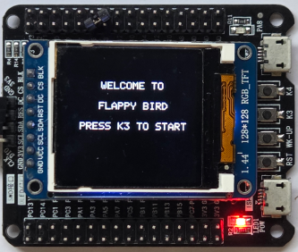
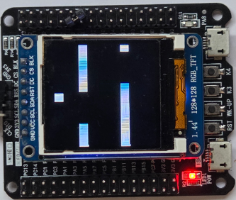

Flappy Bird on STM32F103 (FreeRTOS)
A minimalist, real-time, pixel-rendered Flappy Bird clone running on an STM32F103 MCU using FreeRTOS, double buffering, and a monochrome software framebuffer rendered to an ST7735S 132×132 SPI LCD.
This project focuses on bare-metal game design, task scheduling, software rendering, and embedded systems programming without relying on graphics libraries.
Features
- FreeRTOS-based game loop
- 1-bit monochrome framebuffer, rendered to RGB565 LCD
- Double buffering to eliminate tearing
- Fully functional Flappy Bird gameplay
- Scrolling pipes with adjustable speed & gap size
- Input handling for bird flap
- ST7735S SPI LCD driver (manual pixel-by-pixel push)
Hardware Requirements
- STM32F103C8 / STM32F103RCT or similar
- ST7735S 132×132 SPI TFT display
- One push-button (bird flap)
- SPI interface pins
- Optional: SWD programmer/debugger
Software Requirements
- FreeRTOS
- ARM GCC / arm-none-eabi toolchain (or STM32CubeIDE)
Gameplay Overview
- Tap button to make the bird flap upward
- Pipes scroll from right to left
- Passing a pipe increases score
- Collision with pipe or ground → Game Over
- Simple menu → Play → Game Over → Reset
Rendering Pipeline
- Game Task updates:
- Bird position
- Pipe movement
- Collision detection
- Game state (menu, playing, game over)
- Render Task draws into back_buffer
- Buffers are swapped, and front_buffer is sent to LCD by sendFrame()
- Each bit of the framebuffer is expanded to a 16-bit RGB565 pixel
Build and Flash
I used ST-LINK Programmer to flash the firmware
make all
make flash
Demo


Github Repo